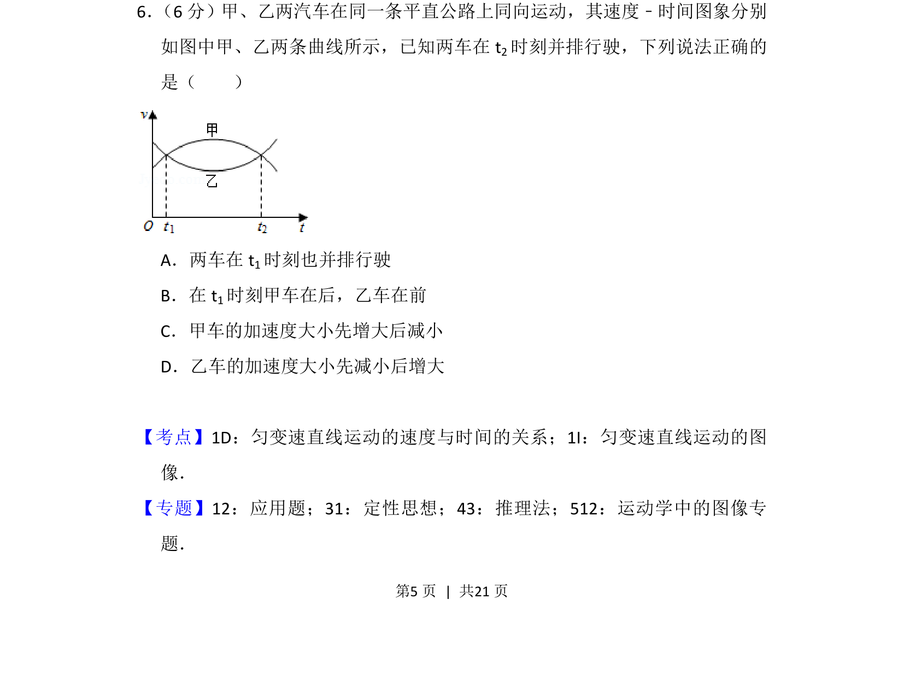
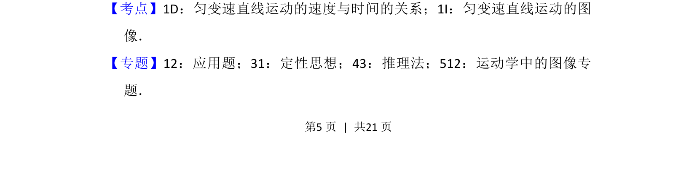
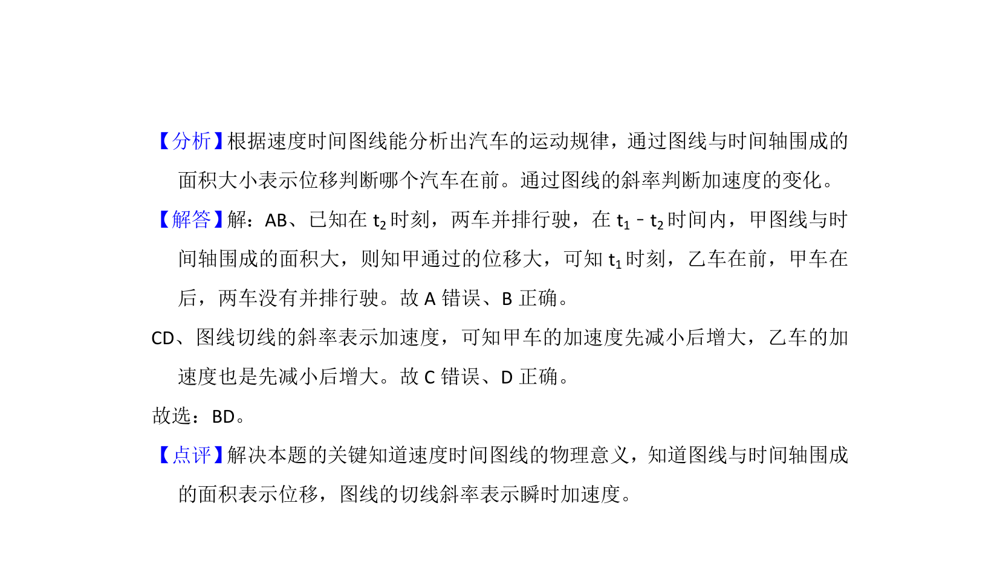

考点：v-t图像 匀变速直线运动 加速度

两车速度-时间图象分析，根据图象判断并排行驶时刻、前后位置关系及加速度变化趋势


📄 原 PDF 第 5 页：
素材/真题/吉林/2008-2024·（吉林）物理高考真题/2018年高考物理试卷（新课标Ⅱ）（解析卷）.pdf
6． （6分）甲、乙两汽车在同一条平直公路上同向运动，其速度﹣时间图象分别 如图中甲、乙两条曲线所示，已知两车在t 2时刻并排行驶，下列说法正确的 是（ ） A．两车在t 1时刻也并排行驶 B．在t 1时刻甲车在后，乙车在前 C．甲车的加速度大小先增大后减小 D．乙车的加速度大小先减小后增大
【考点】1D：匀变速直线运动的速度与时间的关系；1I：匀变速直线运动的图 像．菁优网版权所有 【专题】12：应用题；31：定性思想；43：推理法；512：运动学中的图像专 题．